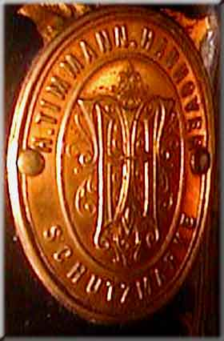

Catalogue of German Makers' Logos
H. Timmann
Hannover
c.1890's - 1914

©
Alan Quinn 2001 All Rights Reserved
This page may not be reproduced or distributed in part or in whole without the prior written permission of the relevant copyright owner